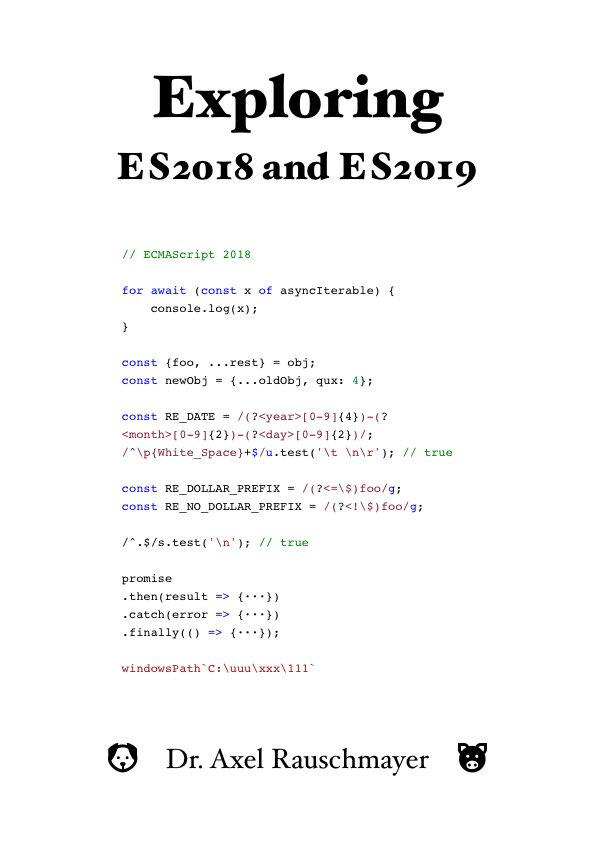

Exploring ES2018 and ES2019
Get the book
About the book
“
Exploring ES2018 and ES2019”:
- Covers what’s new in ECMAScript 2018 and ECMAScript 2019.
- If you want to know more about the rest of JavaScript, consult Axel’s other books.
About the author
Dr. Axel Rauschmayer specializes in JavaScript and web development. He
blogs, writes books and teaches classes.
Axel has been writing about the future of JavaScript since early 2011.
Praise for Axel’s books